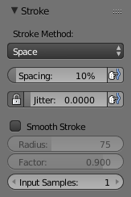

笔触和曲线¶
笔触¶

笔触面板。¶
- 笔触模式 E
选择笔刷的笔触作用到画布的方式。
- 点
鼠标每移动一步绘制一次。
- 拖拽点
通过在画布拖拽鼠标产生一个笔触数据。
- 间隔
创建由连续的点组成的笔触, 通过点 间隔 确定其行距(间距)。
- 间距
相对笔刷半径的百分比。
限制笔刷应用距离为指定间距。
- 喷枪
只要按住鼠标不放并持续移动笔刷就能持续产生喷绘效果。而其它模式的笔刷改变位置时仅仅修改颜色。这个选项不适用于 抓取(移动) 雕刻笔刷。
- 比率
喷枪的颜料间隔。
- 锚定
在笔刷的位置创建一个笔触区。可以通过拖拽改变笔触区域直径的大小。
- 边到边
笔刷位置和方向由两个点决定, 其中第一次单击是一个点, 而拖动会产生与第一个点相对应的第二个点，两点距离是笔刷直径。
- 直线
让你在屏幕区域内通过点击和拖拽画出一条直线。 直线是通过 间隔 分离的，类似于间隔笔触。 按 Alt 可约束直线角度增量为45°。
- 曲线
在屏幕上画曲线，曲线笔触同样也使用 间隔 。
- 绘制曲线
通过使用 数据块菜单 菜单将重复使用的笔触曲线选择并保存起来。
- 添加点 Ctrl-LMB
你可以用 Ctrl-LMB 控制额外的曲线控制点。 控制鼠标拖拽在选定前松开鼠标 按键。
- 变换点
使用 LMB 拖动控制点和手柄。 要使控制点对称可以用 Shift-LMB 拖动它们。 支持位移、缩放和旋转变换操作。
- 选择
可以使用 RMB 单独选择手柄, 也可以通过 Shift-RMB 扩大选择范围，还可以用 A 进行取消或全选。
- 删除顶点 X
可以用 X 删除曲线顶点。
- 绘制曲线 Return
用 Return 或绘制曲线按钮确认制作的曲线。
- 抖动
绘制期间抖动笔刷绘制位置。
- 平滑笔触 Shift-S
平滑鼠标刷过的路径。
- 半径
设置笔刷持续前跟最后绘制的点之间的最小距离。
- 系数
设置笔刷的平滑数量。
- 输入采样
相邻的鼠标位置（输入样本）被平均一起计算平滑笔触。